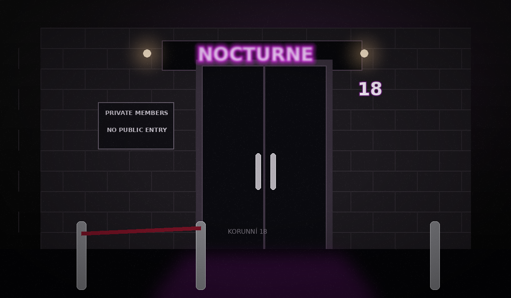

Mimořádná lokalizace na základě vyhodnocené komunikace
Přesnost je před upřesněním adresy omezena na oblast pokrytou příslušnou základnovou stanicí.

Zadejte ulici a číslo popisné / orientační získané z prověřované komunikace.